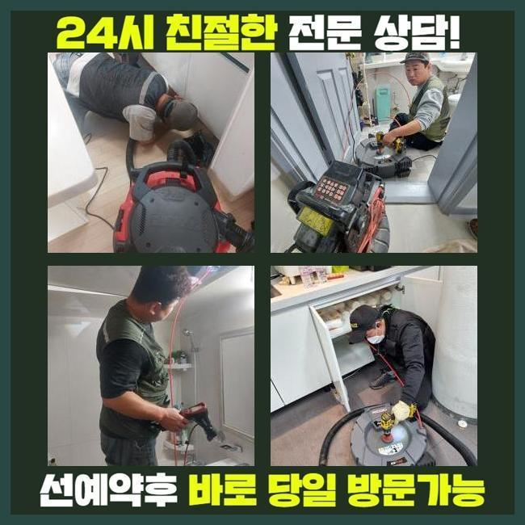
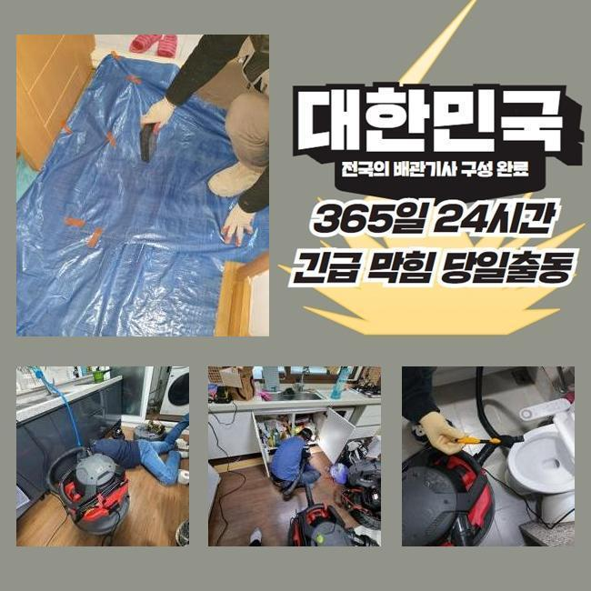
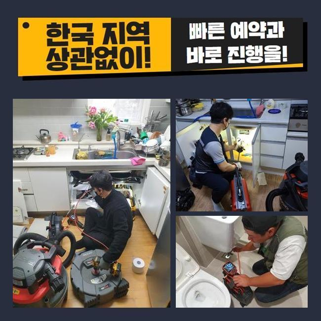
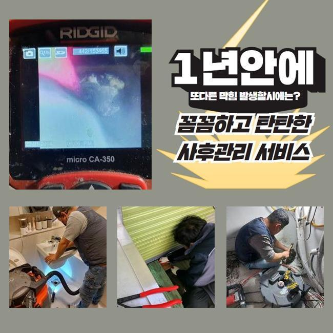
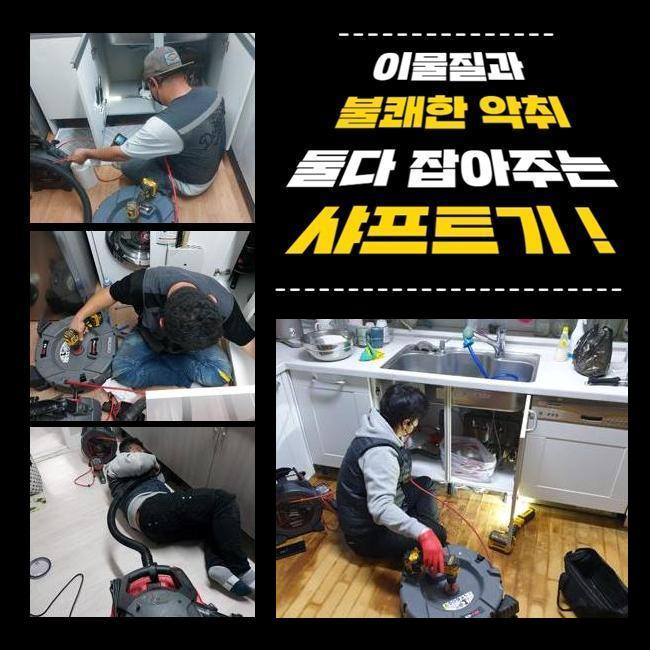
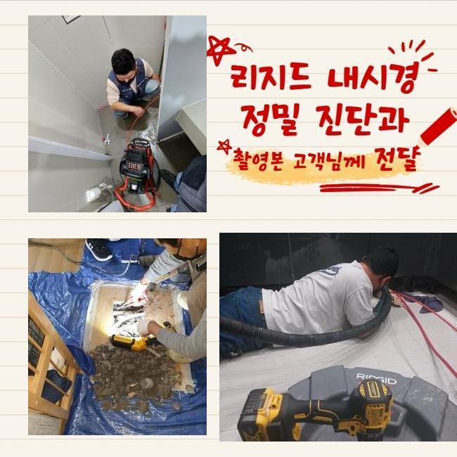
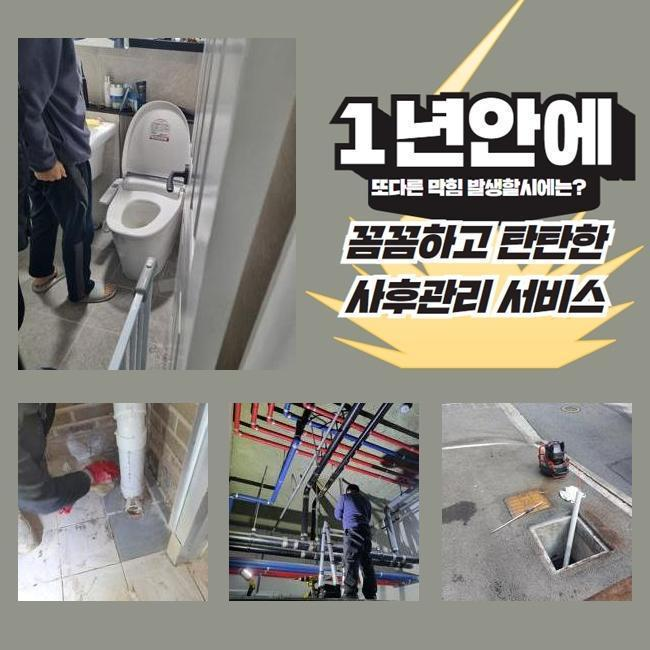

🏠 의왕시 변기막혔을때 안양시 배관역류
안양 변기막힘 전문 시공 후기

📋 작업 개요
- 위치: 안양
- 서비스 유형: 변기막힘, 하수구막힘, 배관막힘, 누수수리, 역류해결, 뚫는업체, 배관청소, 배관보수, 악취차단
- 작업 일시: 2024. 12. 15. 0:57
- 업체명: 하수구수사대 (010-5615-2118)
🔍 문제 상황
의왕시 변기막혔을때 안양시 배관역류
잘 쓰던 화장실 안의 배수구가 고장나버려서 하수가 경로로 흘러나가지 못하는 문제를 안고있던 곳에 갔습니다
사안에 대한 맞춤 조치를 실시하려고 의뢰지를 가장 빠른 타임에 방문드렸어요
상가나 일반 주거지나 어디든지 마다하지 않고 내방해서 철저하게 보수를 신경써서 해드리고 있어요
규모가 큰 건물이거나 전면적인 배관 구조를 검사하는 부분도 기본으로 완수할 수 있는 부분이에요
그리드 철망을 걷어내고 내부 환경을 조사했는데 각양각색의 오염물질들이 잔뜩 집합되어 있는 게 보였습니다
막힘이 초래된 본질적 이유를 알아내는 걸 목표로 삼고 관찰장비를 넣어서 실황을 중개해서 봤습니다
무심코 유출된 각질이나 빠진 머리카락 등의 이물질이 층을 이루어 고이면서 막힘이 양산된 것이라 보였습니다
바닥 배수구가 차단되면 물이 정상배출되지 않고 고여서 생활의 트러블을 낳을 수도 있으며 오랫동안 나몰라라 한다면 파이프가 부서지는 등 보다 심각한 문제로 나아갈 지도 모릅니다
다목적으로 이용한 생활하수는 하수 통로를 거쳐가니까 설치되어있는 해당 배관의 확 트인 모습과 기능이 늘 이루어져야 합니다
지금의 막힘을 어떻게 처치하면 좋을지 감이 안잡히면 전문업체와의 자세한 상담을 하셔서 시공 받으셔야 합니다

🔎 원인 분석
💡 전문가 진단: 정밀 진단 장비를 사용하여 슬러지의 고착 여부를 판명하고 타격/세척 작업을 실시했습니다.
유연한 하수구 뚫음 작업을 위해 배관 특화된 다수의 장비를 지니고 작업지로 이동하니 안심하세요!
배수구에 차오른 물과 오염원들을 걷어내려고 흡입하는 역할의 석션장비와 전동 배관청소기를 사용해요
미처 빠져나가지 못한 머리카락 등을 바깥으로 투출한 다음에 남아있는 파편 및 먼지와 접착성 물질을 삭제하려고 스프링이나 샤프트 그리고 하수 청소제를 적용할 때도 있습니다
갖은 수단으로 배관을 말끔히 처리를 끝내면 산뜻하게 사용과 관리를 하실 수 있습니다
내시경 기기를 내부로 넣어서 자세하게 관찰해보니 머리카락과 석회물질들이 한데 뒤섞여 있었습니다
카메라를 더욱 밑으로 배치를 해주는 족족 잔뜩 말라붙은 오염덩어리가 차례차례 나타났고 결국 어떠한 구간에서 배수구를 원천 차단시킨 고형화된 기름을 발견했어요
해당 부분을 정리정돈해서 트러블을 잠재워서 막힘이 생기기 전처럼 동작 가능하도록 작업했습니다
작업 전에는 더러운 물이 구멍 속으로 빨려들어가지 못해서 제법 높은 수심으로 물이 찼고 상당히 습하다는 느낌이 드는 현장이었는데요
처리 기일이 지연되면 막힘이 배관 균열이나 누수와 같은 사안으로 넘어갈 수 있으니 빠른 조치가 들어가야 합니다
플렉스 샤프트는 단단한 금속의 체인이 끝에 위치한 노즐로 배관벽에 강력하게 결합된 유분덩어리를 능률적으로 긁어내버리는 스케일링 장치입니다
이 장비는 기본적으로 세차게 돌면서 작동하니 파이프에 세게 닿지 않게 유의하는 게 좋습니다
장비에 대한 폭넓은 이해와 기술 접근이 있어야 원활한 사용이 가능하니 제대로 모르시는 일반분들이 제대로 활용하기가 곤란해요

🔧 작업 과정
노련미가 없는 분들이 장치를 운용해서 배관 표면에 진동이 가도록 허용하면 크랙까지 발생할 염려가 있으니 얼마나 오랜 경력이 있는지 물어보고 결정을 내려야 합니다
화학 반응을 만드는 클리너를 부어서 충전을 해주고 살펴보면서 몇 분 기다려서 거품이 피어오르는 현상을 체크해주고 중화를 해줬어요
다시 장치를 들어서 반복적인 절차를 이어가면서 석회물질에 집중하여 사라지도록 작업을 담당했습니다
작업하다보면 석회 조각이 장비를 타고타고 배출되는 상황도 벌어지곤 하는데 내측에 석회가 돌덩이처럼 잔뜩 차올라 있다면 힘때문에 밀려 올라오는 것이니 자연스러운 현상입니다
플렉스샤프트를 가동한 후에는 흡입기인 석션을 다시 써서 잘게 썰린 이물질들을 잔여물없이 흡수해버려요
석션의 진공의 힘으로 실내를 오염하던 하수가 석션통으로 이전되었기에 방해요소를 제거하기 위한 작업을 완수할 수 있었습니다
배수구의 트렌치를 뜯어서 내측 상황을 판별해 봤습니다
분해된 이물질 성분이 범람을 해버리지 못하게 조심스럽게 작업하게 됐고 내시경을 켜서 내부 상황을 자세히 보실 수 있게끔 지원을 해드리기도 했습니다
배관 전용 내시경을 넣어보면 선명하게 상황을 즉각 확인하고 청소 작업을 이어갈 수 있습니다
관찰용 장비가 빠져있다면 무엇때문에 막혔는지에 대한 판단과 작업 중 나타나는 변수에 유연하게 대처하기가 힘듭니다
그러므로 어떤 상황이라도 내시경을 항상 가동할 수 있는 장비보유력이 중요한 것입니다
모든 작업에 앞서서 내시경 작업을 이행하고 있고 관측 결과를 바탕으로 철저하게 난관을 순차적으로 극복해 나갑니다
또한 내시경으로 청소작업을 실시하면 더 꼼꼼하면서 짧은 작업 시간만으로도 이 사태를 해소할 수 있는 장점이 있습니다
현장을 방문하면 바로 내시경을 처음으로 선보이며 작업에 들어가나 오늘은 장비 없이 맨눈으로 살펴봐도 노즐이 들어가지 않을 듯 하여 초입부터 시야를 가리는 것들을 걷어내고 나중에 점검을 위한 목적으로 이 기기를 사용했습니다
뚜렷한 관찰을 도와주는 내시경은 튼튼한 노즐 위에 달린 카메라로 관측하기 힘든 어둑한 배관을 샅샅이 조사할 수 있도록 해줍니다
이번 하수구 뚫음 업무를 마감 정리를 하기 전에 맑아진 관로 내에 내시경을 저 안쪽까지 내려보냈더니 이쪽 배관에도 붙어있는 슬러지화된 찌꺼기를 밝혀낼 수 있었습니다
카메라 스크린으로 작업이 이뤄지는 모습을 즉시 파악하며 미미한 입자도 석션기로 전반적으로 제거를 해갔습니다
자잘하게 잘라주는 업무가 불필요하다 싶다면 플렉스 샤프트를 과도하게 쓰지 않고 결합이 풀린 개별 오염원들을 끌어당기는 석션을 해줘서 단계를 마칠 수 있었어요
냄새는 괜찮은지 보려고 트랩 쪽을 봐줬습니다


✅ 작업 완료
트랩의 안쪽 부분에도 찌든 때들이 상당했기에 배출을 방해하는 상황으로 보였습니다
새걸로 재설치를 해드리고 주변도 물청소를 해드리고 주의사항을 안내드렸습니다
정성을 다한 작업으로 화장실의 물빠짐 곤란이 기분 좋게 끝났으며 향후 누수되거나 냄새가 집으로 확산되는 스트레스 받는 일이 나타나지 않을겁니다
언제라도 욕실의 하수구 막힘 문제를 기민하고 재치 있게 척결해 드릴테니 연락주세요
하수구에 대한 여러 이슈가 촉발된다면 발견하자마자 의뢰를 해주시면 감사하겠습니다




⚠️ 베란다 누수 및 방수 관리 방법
- ✅ 비가 많이 올 때 창틀 주변이나 아래층 천장에 얼룩이 생기는지 정기적으로 확인해 보세요.
- ✅ 우수관 주변 실리콘 마감이 들뜨거나 깨진 틈새가 있는지 손상 여부를 수시로 체크하세요.
- ✅ 베란다 바닥 타일의 줄눈(메지)이 소실되면 그 틈으로 물이 침투하여 누수가 유발됩니다.
- ✅ 누수 의심 증상 발견 시 방치하면 아래층 손실이 커지므로 즉시 전문가의 진단을 받으십시오.
💡 핵심 정리
- 확실한 장비 작업(내시경 점검 및 샤프트 스케일링)으로 원인을 뿌리 뽑습니다.
- 작업 후 1년 이내에 동일한 부위 재발 시 100% 무상 A/S 서비스를 보장합니다.
- 서울 · 경기 · 인천 전 지역에 24시간 언제든 긴급 출동할 수 있도록 항시 대기 중입니다.
❓ 자주 묻는 질문 (FAQ)
🚨 안양 변기막힘 문제로 고민이신가요?
정확한 원인 진단과 확실한 시공으로 재발 없는 해결을 약속드립니다.
24시간 긴급 출동 | 서울 · 경기 · 인천 전지역 | 1년 내 재발 시 무상 A/S